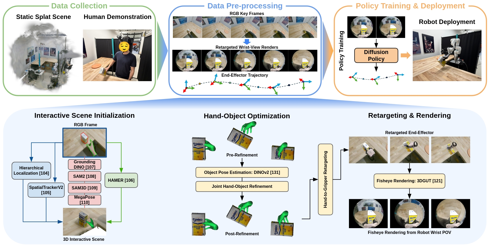

Recent advancements in learning from human demonstration have shown promising results in addressing the scalability and high cost of data collection required to train robust visuomotor policies. However, existing approaches are often constrained by a reliance on multiview camera setups, depth sensors, or custom hardware, and are typically limited to policy execution from third-person or egocentric cameras. In this paper, we present WARPED, a framework designed to synthesize realistic wrist-view observations and actions from human demonstration videos to facilitate the training of visuomotor policies using only monocular RGB data. With data collected from an egocentric RGB camera, our system leverages vision foundation models to initialize the interactive scene. A hand-object interaction pipeline is then employed to track the hand and manipulated object and retarget the trajectories to a robotic end-effector. Lastly, photorealistic wrist-view observations are synthesized via Gaussian Splatting to directly train a robotic policy. We demonstrate that WARPED achieves success rates comparable to teleoperation on four of five rigid-object tabletop tasks and one articulated-object task, while requiring 5-8x less data collection time.
WARPED recovers hand–object motion from an egocentric RGB demonstration, retargets it to the robot end effector, and renders the recovered trajectory from the robot’s wrist camera using Gaussian Splats. These observation–action pairs train a diffusion policy without collecting task-specific robot demonstrations.

WARPED achieves success rates comparable to teleoperation while requiring substantially less data collection time.
| Method | Rotate Box | Pour Mug | Bottle from Rack | Wipe Brush | Can on Plate | Open Microwave |
|---|---|---|---|---|---|---|
| Teleoperation | 16/20 | 19/20 | 16/20 | 15/20 | 19/20 | 18/20 |
| Alter (Heng et al.) | 7/20 | 3/20 | 0/20 | 0/20 | 8/20 | 0/20 |
| WARPED | 20/20 | 18/20 | 17/20 | 11/20 | 17/20 | 17/20 |
| Method | Rotate Box | Pour Mug | Bottle from Rack | Wipe Brush | Can on Plate | Open Microwave |
|---|---|---|---|---|---|---|
| Teleoperation | 22:51 | 24:59 | 31:49 | 30:16 | 15:20 | 35:17 |
| WARPED | 3:37 | 3:18 | 3:27 | 5:19 | 3:41 | 4:12 |
@inproceedings{freeman2026warped,
title = {WARPED: Wrist-Aligned Rendering for Robot Policy Learning from Egocentric Human Demonstrations},
author = {Freeman, Harry and Kim, Chung Hee and Wang, Jenny and Kantor, George},
booktitle = {Conference on Robot Learning (CoRL)},
year = {2026}
}